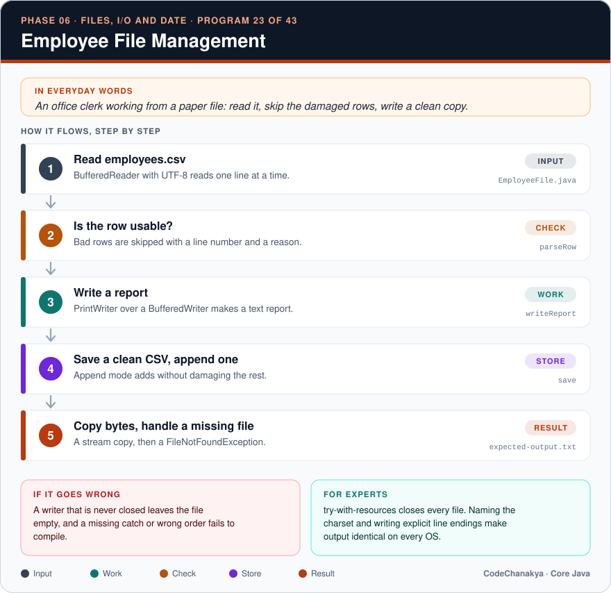

Phase 06 · Files, I/O and Date · Program 23 of 43
Employee File Management
The problem
HR keeps employees in a CSV file. The program has to read it, cope with the bad rows every real file has, write a report and add a new employee without damaging the rest.
Readers and Writers handle text, streams handle raw bytes, and buffering makes both fast. Try-with-resources closes every file even when something fails.
See the flow
The whole program as one picture. Read it top to bottom; the colour of each card says what kind of step it is.


If you are new to coding
An office clerk working from a paper file: read it, skip the damaged rows, write a clean copy.
If you are learning
Follow the numbered cards from top to bottom. Open the file named on each card, run the program, and match its output to the last card.
If you are experienced
try-with-resources closes every file. Naming the charset and writing explicit line endings make output identical on every OS.
Text version of the flow
- Read employees.csv (input): BufferedReader with UTF-8 reads one line at a time.
- Is the row usable? (check): Bad rows are skipped with a line number and a reason.
- Write a report (work): PrintWriter over a BufferedWriter makes a text report.
- Save a clean CSV, append one (store): Append mode adds without damaging the rest.
- Copy bytes, handle a missing file (result): A stream copy, then a FileNotFoundException.
Read in this order
- 1Employee.java, LoadResult.javaA row, and good rows plus problems.
- 2EmployeeFile.javaEvery java.io class used, and why.
- 3Main.javaSix short scenarios.
The code
package com.codechanakya.files; import java.io.BufferedReader; import java.io.BufferedWriter; import java.io.File; import java.io.FileInputStream; import java.io.FileOutputStream; import java.io.FileReader; import java.io.FileWriter; import java.io.IOException; import java.io.InputStream; import java.io.OutputStream; import java.io.PrintWriter; import java.math.BigDecimal; import java.nio.charset.StandardCharsets; import java.util.ArrayList; import java.util.List; /** * Reads and writes the employee CSV using the classic java.io classes. * * Two families of class appear here, and the split is worth learning early: * - Reader and Writer handle TEXT (characters). They need a charset. * - InputStream and OutputStream handle BYTES. They know nothing about text. * Every file is opened with try-with-resources, so it is closed even when an exception is thrown. */ public class EmployeeFile { private static final String HEADER = "id,name,department,salary"; /** * Reads every employee from the file. Rows that cannot be used are skipped and described * in the result. A file that cannot be opened at all throws IOException. */ public LoadResult load(File file) throws IOException { LoadResult result = new LoadResult(); // FileReader reads characters one at a time from disk; BufferedReader wraps it so lines // come from a memory buffer instead of a disk read each time. try (BufferedReader reader = new BufferedReader(new FileReader(file, StandardCharsets.UTF_8))) { String line; int lineNumber = 0; while ((line = reader.readLine()) != null) { lineNumber++; if (lineNumber == 1 && line.equals(HEADER)) { continue; // the header names the columns; it is not data } if (line.isBlank()) { continue; // blank lines are harmless, so no complaint } parseRow(line, lineNumber, result); } } return result; } private void parseRow(String line, int lineNumber, LoadResult result) { String[] parts = line.split(",", -1); // -1 keeps empty trailing fields instead of dropping them if (parts.length != 4) { result.addProblem("line " + lineNumber + ": expected 4 fields but found " + parts.length); return; } try { BigDecimal salary = new BigDecimal(parts[3].trim()); result.addEmployee(new Employee(parts[0].trim(), parts[1].trim(), parts[2].trim(), salary)); } catch (NumberFormatException e) { result.addProblem("line " + lineNumber + ": salary is not a number: \"" + parts[3].trim() + "\""); } } /** Writes a fresh file, replacing anything already there. */ public void save(File file, List<Employee> employees) throws IOException { try (BufferedWriter writer = new BufferedWriter(new FileWriter(file, StandardCharsets.UTF_8))) { writer.write(HEADER + "\n"); // "\n" rather than newLine(), so the file is the same on every OS for (Employee employee : employees) { writer.write(employee.toCsv() + "\n"); } } } /** Adds one line to the end of an existing file. The third argument, true, means append. */ public void append(File file, Employee employee) throws IOException { try (BufferedWriter writer = new BufferedWriter(new FileWriter(file, StandardCharsets.UTF_8, true))) { writer.write(employee.toCsv() + "\n"); } } /** Writes a readable, aligned text report. PrintWriter adds printf and println to a Writer. */ public void writeReport(File file, List<Employee> employees) throws IOException { try (PrintWriter out = new PrintWriter(new BufferedWriter(new FileWriter(file, StandardCharsets.UTF_8)))) { out.printf("%-8s %-14s %-12s %11s\n", "ID", "Name", "Department", "Salary"); out.print("-".repeat(48) + "\n"); for (Employee employee : employees) { out.printf("%-8s %-14s %-12s %11s\n", employee.getId(), employee.getName(), employee.getDepartment(), employee.getSalary()); } out.printf("%d employees\n", employees.size()); } } /** Reads every line of a text file. Fine for small files; for huge ones, read line by line instead. */ public List<String> readAllLines(File file) throws IOException { List<String> lines = new ArrayList<>(); try (BufferedReader reader = new BufferedReader(new FileReader(file, StandardCharsets.UTF_8))) { String line; while ((line = reader.readLine()) != null) { lines.add(line); } } return lines; } /** * Copies any file, text or not, byte for byte. Returns how many bytes were copied. * A 4 KB buffer means one disk read per 4096 bytes rather than one per byte. */ public long copyBytes(File from, File to) throws IOException { long total = 0; try (InputStream in = new FileInputStream(from); OutputStream out = new FileOutputStream(to)) { byte[] buffer = new byte[4096]; int count; while ((count = in.read(buffer)) != -1) { out.write(buffer, 0, count); // write only what was actually read this time total += count; } } return total; } }
Only the key files are shown. The rest are in the repository.
Run it
$ ./run.sh --check
--- Reading data/employees.csv ---
Loaded 6 employees, skipped 2 lines
Skipped line 8: expected 4 fields but found 3
Skipped line 9: salary is not a number: "seventy thousand"
--- Payroll by department ---
Engineering 285000.50
Finance 140500.00
Support 41000.00
Total 466500.50
--- Writing a report, then reading it back ---
| ID Name Department Salary
| ------------------------------------------------
| E-101 Asha Menon Engineering 92000.00
| E-102 Rahul Verma Finance 68000.00
| E-103 Meera Iyer Engineering 105000.50
| E-104 Kiran Rao Support 41000.00
| E-205 Dev Patel Finance 72500.00
| E-208 Neha Joshi Engineering 88000.00
| 6 employees
--- Saving a clean copy, then appending ---
Rows after save : 6
Rows after append: 7 (problems: 0)
--- Copying as raw bytes ---
Copied 280 bytes; the original is 280 bytes, the copy is 280 bytes
--- When the file is not there ---
exists(): false
Caught FileNotFoundException
FileNotFoundException is an IOException: true
OK: output matches expected-output.txt
This is the real output from OpenJDK 21.0.13 on Linux. It has not yet been run on Java 25, Windows or macOS.
Try it yourself
- BeginnerPrint the highest-paid employee.
- BeginnerAdd countLines().
- BeginnerAdd a total to the report.
- IntermediateExport one department.
- IntermediateReject negative salaries.
- ChallengeMerge two files.
Hints and solutions are in the exercises and solutions folders. Try first.
Break it on purpose
Three files: a writer that is never closed, an unhandled IOException, and catch blocks in the wrong order. The README in the broken folder explains each one.